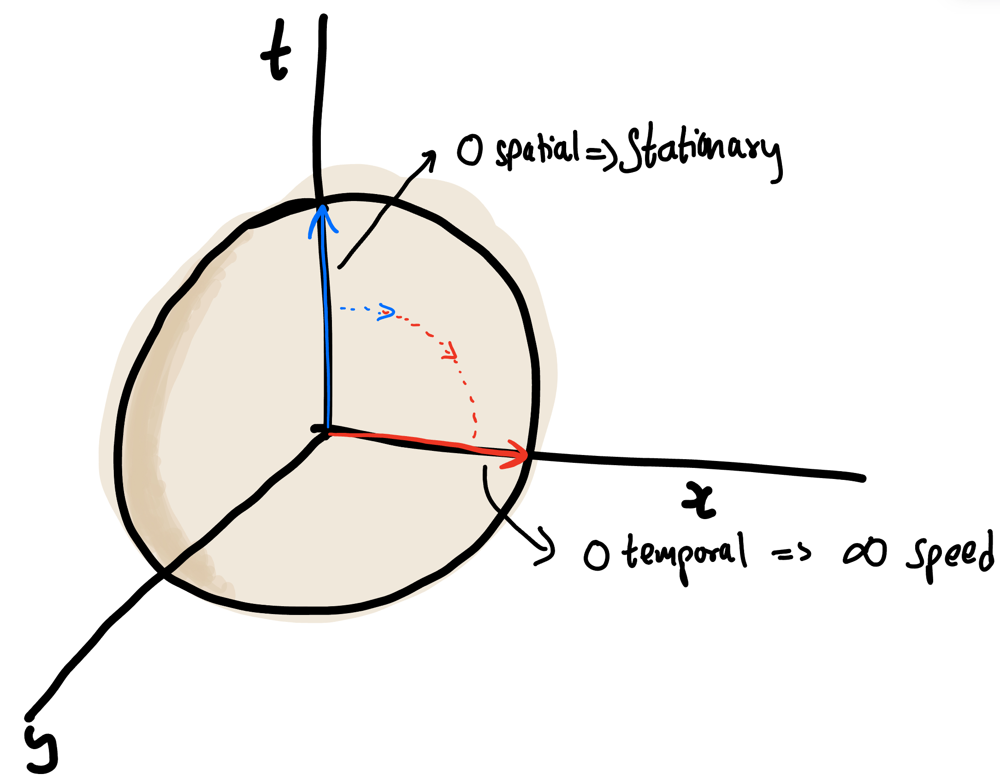

The basic quantities that we use in classical mechanics are vectors with 3 components (corresponding to 3 spatial axes). Now let’s say we want to incorporate even time as another dimension in our space (now promoted to the notion of "spacetime"), we now have a 4-component vector. This establishes a vector space on which we can further define structures and do algebra with it. Let’s assume a "dot" product X ⋅ Y ∈ ℝ which is prescribed as : $$\begin{aligned} \begin{bmatrix} a_1&a_2&a_3&a_4 \end{bmatrix} \begin{bmatrix} -1 & 0 & 0 & 0 \\ 0 & 1 & 0 & 0 \\ 0 & 0 & 1 & 0 \\ 0 & 0 & 0 & 1 \end{bmatrix} \begin{bmatrix} b_1 \\ b_2 \\ b_3 \\ b_4 \end{bmatrix} \in \mathbb{R} \end{aligned}$$ Then Einstein postulated phenomenologically that laws of physics are same for all inertial observers. So in our mathematical language, we hope that even our linear algebra remains the same. We remember from linear algebra that the dot product value doesn’t change depending on the basis we use to represent the vector, applying the same logic here we need to ensure that the prescription of our "dot" doesn’t change.(The matrix diag[−1,1,1,1] is called the metric and is denoted by ημν) This corresponds to a similarity transform where the matrix looks the same in both bases: $$\begin{aligned} \Lambda^{-1} \eta \Lambda = \eta \end{aligned}$$ Such kinds of transformations are known as Lorentz transformations which relates the math of different inertial observers.
Now if we question the prescription of our "dot", the reason is Einstein’s second postulate that there exists a finite speed limit, and this is that of speed of light. In Calculus we remember we have the notion of "dot" coming from Pythagoras theorem : $$\begin{aligned} a\cdot b = a_1b_1 + a_2b_2 + a_3b_3 + a_4b_4 \end{aligned}$$ Lets plot the curve which keeps the magnitude of a vector constant i.e constant = a12 + a22 + … we get a spherical shell centred at the origin.(treat a1 as time and rest ai as spatial components)

Changing the frame of the observer implies changing the arrow pointing direction on the shell, but the magnitude given by the "dot" remains the same, i.e., on the shell. Here we observe that we can achieve infinite speed in this theory.
Now lets do the same thing for our prescription i.e constant = − a12 + a22 + … What we have is a 2-sheet hyperboloid (drawn slightly different for ease of understanding). $$\begin{aligned} \includegraphics[width=0.8\textwidth]{2.png} % Adjust the file name and scale \end{aligned}$$ Here we observe Einstein’s postulate is being satisfied i.e. slope 0 can’t be achieved by changing frames.(Minimum slope that can be achieved is = 1, which can be scaled to speed of light by changing the units). A proper diagram is given below